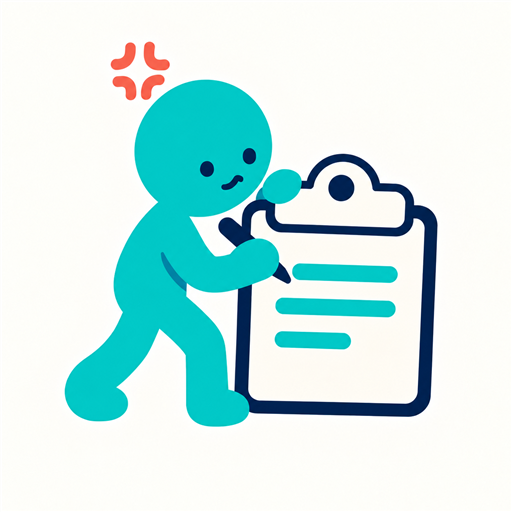

사건 기록 · 증빙 정리
에브스토리Evistory
흩어진 기록을 하나의 흐름으로
언제 무슨 일이 있었는지, 어떤 자료가 남아 있는지 쉽게 돌아보세요. 사건별 진행 기록과 증빙을 모아 필요한 내용을 설명하고 공유할 수 있습니다.
- 사진·문서·음성 증빙을 진행 기록에 연결
- 시간순으로 정리한 사건 기록을 PDF로 저장·공유
- 비밀번호로 암호화한 백업 파일 만들기·복원
데이터 및 이용 안내
사건과 증빙은 앱 내부 저장 공간에 보관합니다. 로그인이나 자동 클라우드 동기화를 사용하지 않으며, 외부 저장·공유와 백업은 사용자가 직접 실행합니다. PDF 미리보기 화면에는 광고가 표시될 수 있습니다.
에브스토리는 기록을 정리하는 도구이며, 법률적 결론이나 분쟁 결과를 판단하지 않습니다.